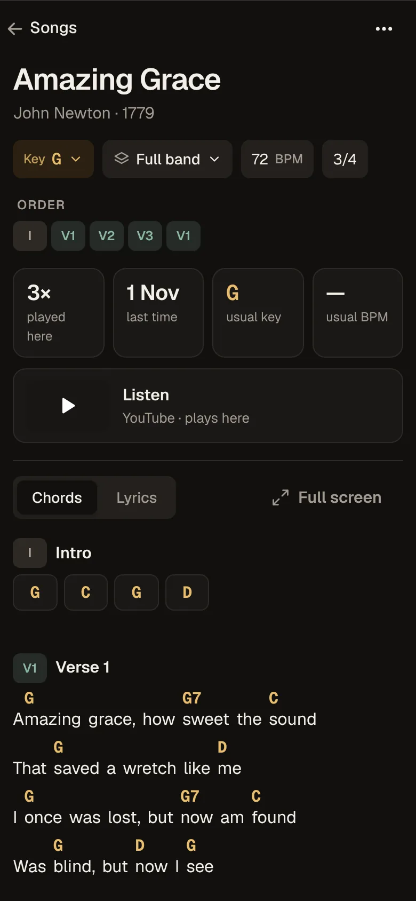

Chord charts, setlists and the band's schedule in one app for worship teams. Plan on Tuesday, play on Sunday, from the same charts on every phone, iPad and laptop.
Free during the beta. Free for good for teams of up to 5.


Real screens from the app. The red line at the top means the set is live.
From Tuesday to Sunday in one place.
Leaders plan the service, the band says who's in, and everyone plays from the same chart. A change on Tuesday is on every music stand by Sunday.
Build the setlist in minutes.
Pick songs from your church's library, set the key for this service, add a cue for the band and slot in the welcome and the offering.
- Who leads each song, with key and tempo
- Moments for prayer and announcements in the order
- Mark it Ready and the whole band gets a notification

Everyone knows when they're playing.
Musicians answer Yes, Maybe or No right from Home. Leaders see who's in while they plan. No group chat to scroll back through.
- Each person says what they play and sing
- Next service, rehearsal time and place on one card
- Service templates for every Sunday morning and youth night

Made for the stage.
Big, clear charts with the cues where you need them. Transpose for the singer on the day, and the chart still opens when the church Wi-Fi doesn't.
- Any key, any capo, without touching the stored song
- Key changes marked where they happen
- Swipe to the next song, nothing to tap by accident

Small things that save Sunday.
Transpose and capo
Change the key for one service. The song in the library stays as it was written.
Works without Wi-Fi
Charts live on each device, so a weak signal in the sanctuary doesn't matter.
One tap tells the band
When the set is ready, everyone gets it. Later changes show up inside the setlist.
Subs without accounts
Send a stand-in drummer a link to the set. It stops working a few hours after the service.
Paste any chord sheet
Paste chords over words and it finds the verses and choruses. Edit the order by dragging.
Your songs stay yours
Songs are kept in a plain text format. Export the whole library whenever you like.
One price for the whole team.
Every person on the team gets every feature. No charge per musician.
Free
For a small band or a few friends who lead worship together.
- Up to 5 people
- Songs, setlists, charts and live mode
- Works offline
Band
$0 during the beta
For a worship band, youth team or church plant.
- Up to 10 people
- Schedule, availability and band requests
- Guest links for stand-ins
Church
Most teams$0 during the beta
For a church with a worship team, one service or several.
- Up to 30 people
- Several services, each with its own band
- Roles: owner, admin, leader, member
Prices in US dollars. Local taxes may apply once paid plans start.
Before you join.
What happens when I join?
You make a free account in a minute. If your church or band isn't on Setlists.md yet, tap Ask to start a church and tell us its name. We set it up and reply by email, usually within two days. Then you share one invite link with your team.
Does everyone in the band need to sign up?
Each person makes a free account from your invite link, and you approve who joins, so the library stays inside your team. Stand-ins can use a guest link with no account.
Do we need to install anything?
No app store needed. It runs in Safari or Chrome. Add it to your Home Screen to use it full screen and offline. Here's how.
Can we bring our songs?
Yes. Paste a chord sheet and it finds the sections for you. Your library starts empty, so you only keep songs your church is allowed to use.
What does the beta cost?
Nothing. The beta is free. Before paid plans start, we tell every beta team the price and the date, and you choose whether to continue. Teams of up to 5 stay free.